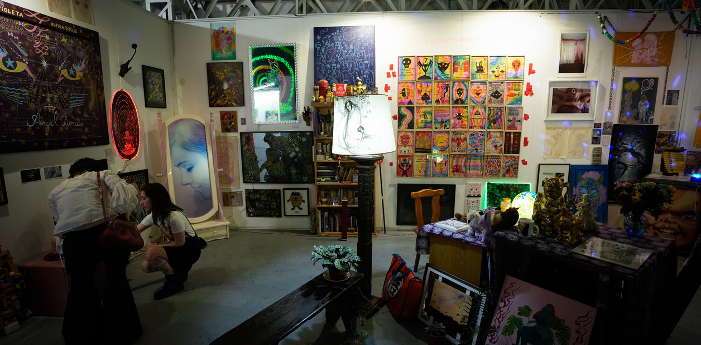
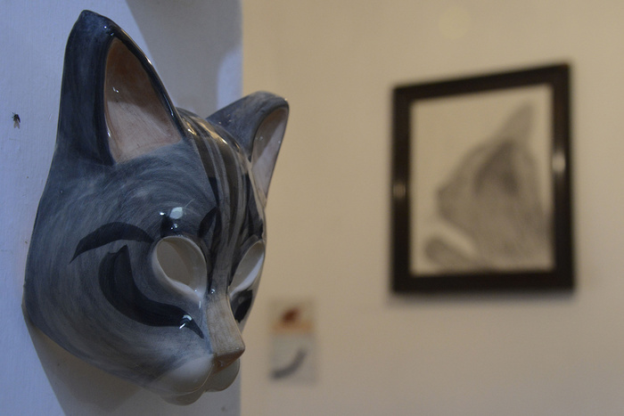
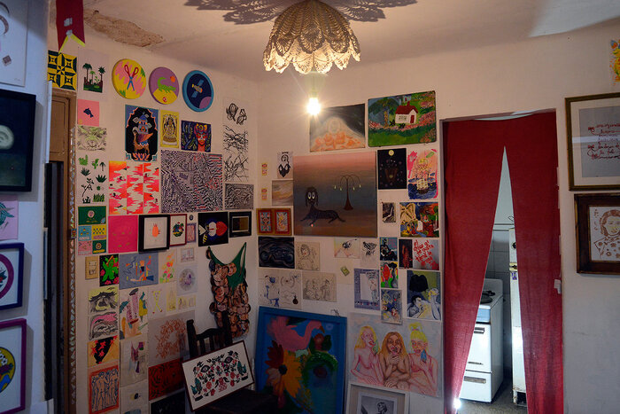

“El ánimo por las nubes”: nuevos compradores y ventas sostenidas en arteba
31 de agosto de 2025“Me encantó la energía incorporadora de El Castillo, de Diego de Aduriz...
Leer más →
“Me encantó la energía incorporadora de El Castillo, de Diego de Aduriz...
Leer más →
Llegamos al stand de El Castillo, donde hablamos con Diego de Aduriz: “Estoy contento por demás, y también están contentos los artistas que convoqué. Todo salió mejor de lo que esperábamos...
Leer más →
El origen de El Castillo se remonta a 2018 en Rosario, donde de Aduriz curó una megamuestra con más de setenta artistas de diversos rubros y orígenes....
Leer más →
El Castillo de Diego de Aduriz es uno de los espacios más vibrantes del Sector Utopia, con 22 artistas y todo su folclore en exhibición...
Leer más →El Castillo, el inquietante proyecto de Diego de Adúriz, concentra objetos en plan acumulador: un escena que se convierte en una instalación de un espacio vivo...
Leer más →
Espacios de arte en el Pasaje Pan y en República de la Sexta cierran el año con expresiones de arte contemporáneo accesible en pequeño formato, entre ellas una exposición temática sobre gatos que lleva como título Felinxs divinxs....
Leer más →
Se inaugura hoy con una proliferación multicolor de obras de arte, mezcladas e integradas con otros objetos muy parecidos. Es gestionado por el artista plástico y curador independiente Diego de Aduriz, en colaboración con Matías Salto y Julieta López....
Leer más →